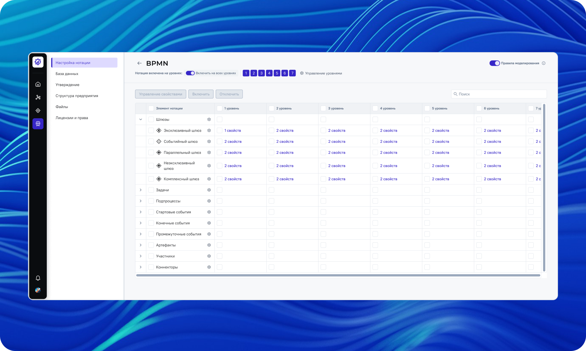
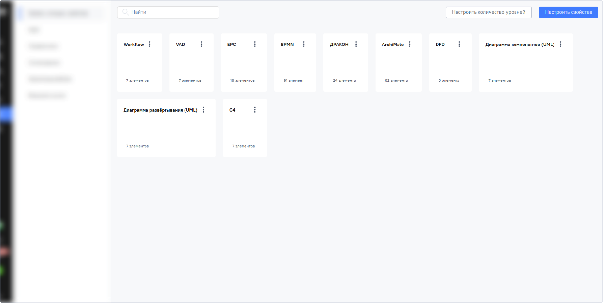
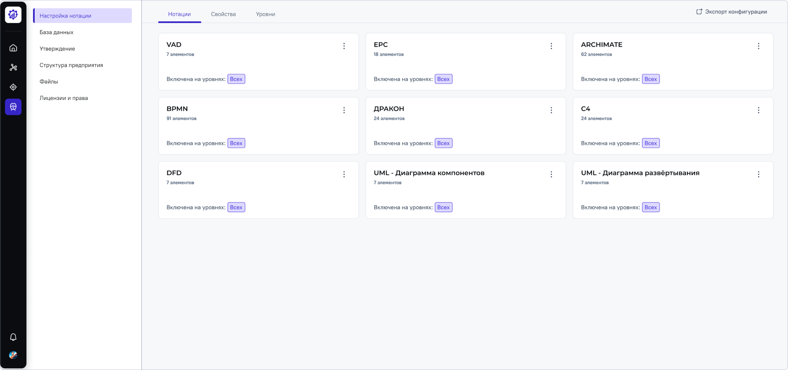
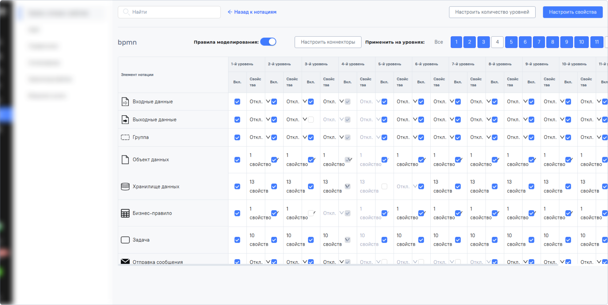
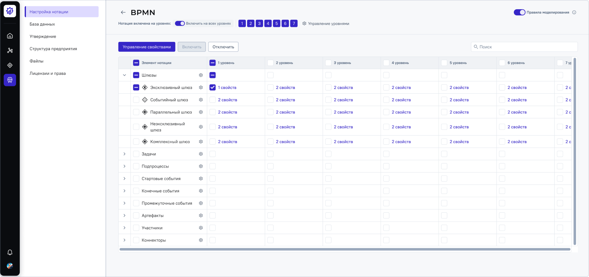
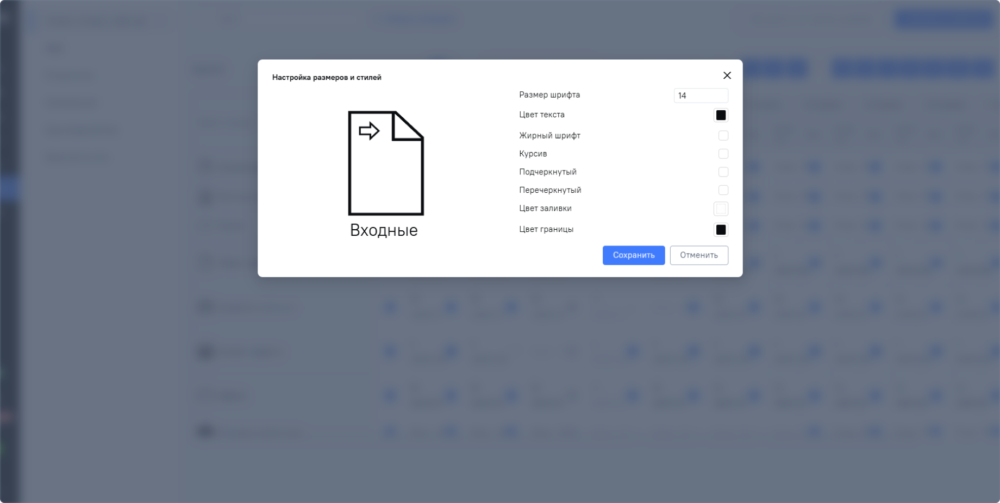
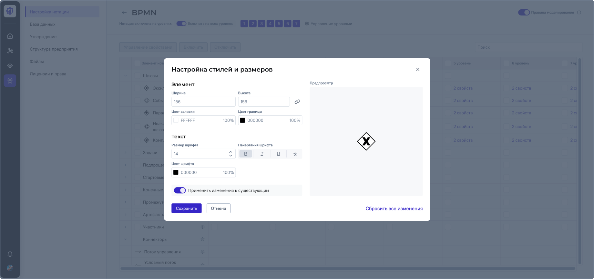

Раздел настройки нотации
Задача
- — Снизить когнитивную нагрузку при настройке сложных системных нотаций
- — Сократить время на подготовку системы к работе (Time-to-Value)
- — Улучшить визуальное восприятие и иерархию данных в настройках
- — Обеспечить масштабируемость таблиц под растущие параметры системы
Что я сделал
- — Провёл аудит текущего процесса настройки и выявил критические точки: отсутствие массового редактирования и сложность оценки конфигурации
- — Сформулировал гипотезы, на основе них самостоятельно провёл качественное исследование UX
- — Разработал и внедрил инструменты массового редактирования (Bulk actions), исключающие монотонное заполнение сотен однотипных полей
- — Спроектировал новую визуальную иерархию и структуру данных для раздела «Настройки нотаций»
- — Обновил дизайн страниц в соответствии с актуальной дизайн-системой, упростив отображение ключевых функций
- — Инициировал и внедрил паттерн «панели элементов» для работы с элементами — решение было реализовано в продукте раньше аналогичных паттернов в индустрии
Результат
- — Ускорил цикл подготовки системы: внедрение Bulk actions значительно сократило время на первичную настройку нотаций
- — Снизил когнитивную нагрузку за счёт перехода к структурированному отображению данных и упрощённой навигации
- — Повысил точность настройки: оптимизация процесса ввода данных минимизировала вероятность человеческой ошибки
- — Сделал интерфейс масштабируемым: новая архитектура таблицы позволяет легко добавлять новые системные параметры без потери читаемости
- — 100% положительный отклик (5 из 5 компаний): по результатам финального тестирования все участники подтвердили высокую ценность и удобство обновлённого интерфейса
До

После

До

После

До

После
